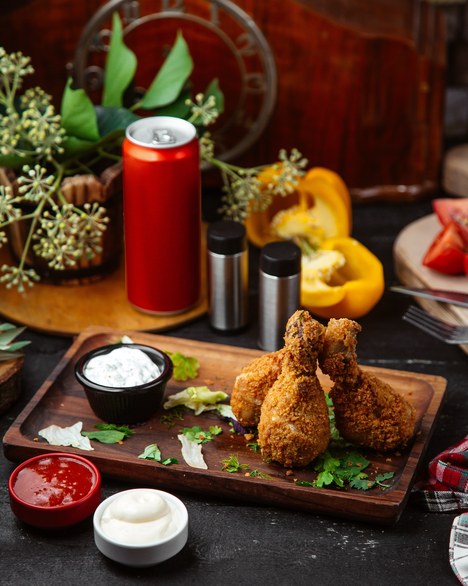
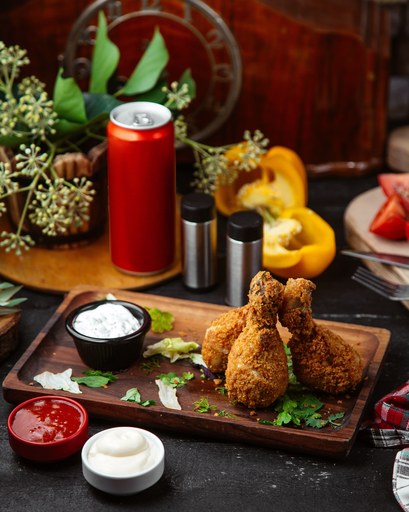

→
🍗 Crispy Fried Chicken Recipe
🍗 Crispy Fried Chicken: Golden, crunchy on the outside and tender inside — a flavorful
comfort food classic that originated in the United States (USA).
Prep Time: 20 minutes
🕒 Cook Time: 15-18 minutes
👩🍳 Serves: 4-5 people
🍗 Ingredients
Marinade
500g chicken pieces (legs or breast)
1 cup buttermilk
1 tsp salt
½ tsp black pepper
1 tsp paprika
½ tsp garlic powder
For Coating:
1 ½ cups all-purpose flour
1 tsp baking powder
½ tsp chili powder
½ tsp salt
Oil for deep frying
👩🍳 Instructions
Marinate chicken in buttermilk and spices for 2 hours (or overnight for best flavor).
Mix coating ingredients in a separate bowl.
Dip marinated chicken in flour mixture, coat well, and rest for 5 mins.
Heat oil to 175°C (350°F) and fry chicken until golden brown (6-8 mins per side).
Drain on paper towels and serve hot with sauce.
Enjoy every bite you make, and let others share in the joy too.😉
 
